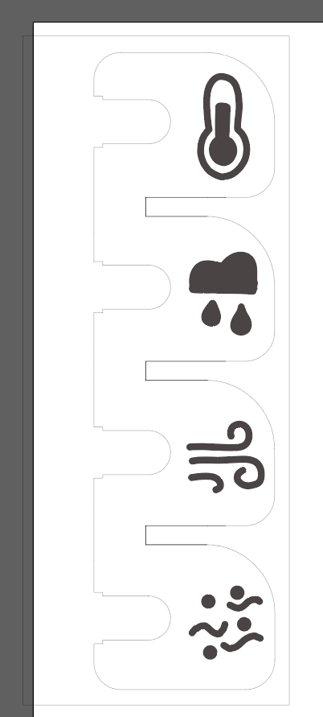

Sluttprosjekt
Pendlerhjelp
I siste oppgave i DigiFab skal vi kunne ta ibruk elektronikk og to digitale fabrikasjonsmetoder for å lage noe som kan bidra positivt med tanke på bærekraftig utvikling eller klimautfordringer og global oppvarming. Dette har blitt møtt med konseptet Pendlerhjelp som skal oppfordre brukere til å reise mer miljøvennlig og dermed redusere utslipp fra transportsektoren.
Hvorfor?
Transportsektoren står for litt info om prosjektet
Konsept
Pendlerhjelp skal vise deg den beste reisemåten og belønne deg for å velge mijøvennlige framkomstmidler (dersom forholdene ligger til rette for å velge bedre...)
Funksjonalitet:
- Brukeren velger tidspunkt og sted for pendling og hvilke transportmetoder som er aktuelle.
- Enheten slås på i 2 t rundt brukerens valgte avreisetidspunkt og er ellers i dvale.
-
Data hentes inn fra Yr.no og disse parameterne blir signalisert
med fargekoder:
- temperatur
- nedbør
- vind
- luftkvalitet
-
Skjermen vil si noe om hvilken transportmetode som er mest
fordelaktig på det tidspunktet man ser på skjermen basert på
dataene og hvor mye tid som gjenstår før brukeren skal ha nådd
reisemålet. Disse kan konfigureres:
- buss
- sykkel
- gå
- kjøre bil
- Brukeren trykker på en av to knapper i det de forlater enheten og tar et valg om de vil velge det beste for miljøet og helsen.
- Belønning i form av poeng
Utvidelsesidéer:
- Sende data fra enheten til en database via WiFi
- Hensyn til helsefaktorer som er med på å avgjøre resultatet for anbefalingen. Hvis man har astma eller liknende vil det ikke gi like store utslag om man velger å ikke sykle eller gå. (I tillegg kan man gjøre valg som er bedre for egen helse. Dersom du har astma eller migrene? Du kan velge at på dager hvor det er ekstremt dårlig luftkvalitet får du ikke særlig dårlig utslag selv om du ikke f.eks. sykler.)
- Inkludere sensorer for lokale verdier (Overordnet var det også tenkt at sensorer kunne blitt inkludert, men det var et spørsmål om arbeidsmengde og hvorvidt det var relevant for reisemålet.)
- Enheten kan være solcelledrevet
Hvordan?
Først bestemte jeg meg for hvilken mikrokontroller jeg skulle bruke. Det sto mellom Arduino Uno, ESP32 og Raspberry Pi, og valget gikk på ESP32 fordi den har flere I/O-pins (Input/Output) enn Arduinoen, er mer kompakt og krever mindre strøm enn begge motstanderne. I tillegg kan man koble den opp til WiFi og Bluetooth.
Jeg lagde en skisse av produktet med tablet, og bestemte meg for de to digitale fabrikasjonsmetodene:
- 3D-printing
- laserkutting
Utviklingsprosessen krevde mye iterasjon, så det var ikke en rett vei fram til målet. For å vite hvordan en boks skal se ut, må man vite hva som skal være i den...
1.prototype
Basert på skissen puttet jeg de elektroniske komponentene sammen og designet en 3D-modell for en boks basert på grove målinger og bilder som canvas for å plassere elementer relativt til hverandre.
Eksporterte skissen og redigerte den som en vektorfil som kunne benyttes til laserkutting og -gravering med plexiglass. Printet boksen i PLA og prøvde grunnleggende kode som skulle teste LEDs og vise dette i samspill.
Basert på første prototype ville jeg gjøre et par endringer. Først og fremst ville jeg bytte ut skjermen som krevde veldig mange I/O-pins, en del strøm og kun ga 16x2 tegn, som jeg synes var litt for begrensende. Den var også ganske stor, så jeg ønsket å gå i en mer kompakt retning med produktet.
Elektronikk
Alle komponentene som er tatt i bruk i siste prototype.
- Adafruit HUZZAH32 - ESP32 Feather [1]
- Adafruit 128 x 64 OLED FeatherWing [2]
- FeatherWing Stacking Headers
- 2 * mini breadboards
- 2 * 10 kΩ-resistor
- 12 * 220 Ω-resistorer
- 4 RGB-LEDs
- 2 taktile knapper
- 2 * AA-batteripakke (3V-strømkilde)
- Kabler
- Krympestrømper
- Loddeutstyr
I tillegg:
På grunn av valget mitt av breadboards kunne jeg ha en del ulike layouts, og prøvde meg frem med ulike løsninger med 2 og 3 breadboards for å se hvordan jeg skulle kombinere det med batteripakken og plexiglasset. Endte opp med 2 mini breadboards og klistret dem på en 3mm plate med arkitekturpapp for å jevne ut høydeforskjeller.
Erstattet skjermen fra første prototype med en 128x64 OLED-skjerm. Fikk hjelp med å lodde på stacking headers så OLED-skjermen kunne bli plassert på toppen av ESP32-en, som betydelig reduserte plassbehovet. FeatherWing har også 3 mini-knapper på innsiden, som jeg tenker kunne blitt brukt til konfigurasjon, men jeg trengte GPIOs for å kontrollere alle pinsene fra LEDs.
Loddet fargekodede ledninger med resistorer til hver RGB-pin, og en svart ledning på katode-pin og puttet på krympestrømper.
Laserkutting og -gravering
Lastet opp skissen som vektorfil og redigerte den videre i Adobe Illustrator. For å bruke printeren må artboardet være 101 mm x 710 mm og alle linjer som skal kuttes være på 0,025 mm, mens det som skal graveres kan ha en annen tykkelse. Materialet jeg brukte var plexiglass på ca 3.5mm.
Oppdaget på første print at jeg fikk et par hull, fordi ikke alle strekene var i riktig tykkelse, og basert på designet av 3D-modellen så jeg at jeg hadde gjort noen feil med beregningen av avstandene mellom LEDS, noe jeg ordnet i andre omgang. Fikk også lastet opp 3D-filen som .dxf-fil til Illustrator for å sammenlikne.
PDF-filen ligger på Github (lenke under ressurser).
3D-modellering og -printing
Den andre 3D-modellen ble basert på mer nøyaktige målinger tatt med digitalt skyvelær. Den består en grunndel og et lokk. La inn skisser for komponentene i Fusion 360 fra Autodesk, og la inn parametere for målingene og prøvde å holde komponentene adskilt med gitte måleverdier. Lastet opp en SVG av det jeg skulle laserkutte slik at jeg kunne finne plasseringen av LEDS og kunne designe toppen av boksen lettere. Brukte "Loft" for å koble sammen det nedsenkede knappefeltet med skjermfeltet.
Printet dette med PETG på "0.20mm SPEED" med automatisk support ved 40 grader. Resultat før breadboards ble klistret sammen med arkitekturpapp og alle LEDs er skvist på plass.
Alt i alt ble det litt trangt til slutt, men jeg valgte å bruke en Dremel for å file bort litt av sideveggene slik at det ble plass til breadboards. Polerte så litt over slik at det lukket seg litt bedre. Overflaten der support-materiale var måtte files og poleres litt. Siden jeg loddet og brukte krympestrømper på ledningene, ble de tykkere enn jeg tenkte da jeg modellerte, siden jeg bare tok hensyn til selve pinsene, så jeg filte dem bredere med dremelen. Slapp å printe en ny del så sparte de ressursene.
En utfordring jeg gjerne skulle ha jobbet litt mer med er lokk-design, slik at det lukker seg pent. Enda en optimalisering kunne også ha vært å se litt mer på vinkler slik at mindre support-materiale kreves for å printe det.
3mf-filen ligger på Github (lenke under ressurser).
Kode
Prosessen med å sette opp en ESP32:
- Laste ned Arduino IDE
- Legge til libraries for ESP32 og for skjerm, repo fra Github
- Velge board: ESP32 Dev Module
- Velge port
- Registrere alle komponentene i koden, programmere og teste
Kodens funksjonalitet ble avslutningsvis å få vist beskjeder på skjermen og ha lys som reagerer på knappetrykk. Jeg er fornøyd med å ha lagd en del funksjoner slik at gjenbruk av kode går bedre. 4 RGB-leds trenger 12 ulike variabler, så det er men del å holde styr på. Jeg fikk til å koble opp enheten til WiFi, men valgte å ikke ha dette med på koden til slutt. På grunn av loddingen var det skjørt å håndtere, som resulterte i at den øverste LED ikke kan nå B (blå) og den nederste ikke kan nå G (grønn).
Det var en utfordring å få skjermen til å holde seg stabil og samtidig oppdatere verdier uten at delays kommer i veien. Til slutt fikk jeg vist startskjerm, velkomstskjerm og en klokke som endrer seg hvert minutt, dagens transportalternativ og i tillegg en negativ beskjed dersom man klikker på den røde knappen.
Koden ligger på Github (lenke under ressurser).
Sluttord
Produktet er langt fra ferdig, og ting kunne ha blitt gjort annerledes, men jeg er fornøyd med hvor mye jeg har lært i prosessen, og har lagt ned mye arbeid i utviklingen av produktet, men kanskje mest med generelt layout, og mindre med finpuss og funksjonalitet.